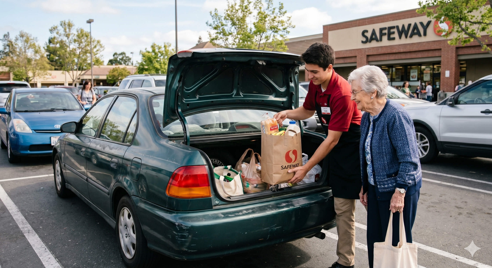

Let’s be entirely real: finding sobriety and temporary structure inside a supportive household is a massive victory, but the ultimate goal is walking out into the world fully self-reliant. Phase 5 is not a passive administrative handoff to someone else's waitlist. This is the final, high-impact transition where the survival habits of the streets are permanently replaced by the stable, healthy routines of an independent life. We stay completely locked in with our participants until they are fully integrated into the workforce, anchored in their own housing, and ready to thrive as equal, valued neighbors in the community we share.
True compassion means staying on the field until the victory is secure. We take a hands-on, deeply practical approach to ensure that the unpredictability of the streets is replaced by a life built on solid structure, genuine connection, and personal independence.
The bedrock of this final step is stable, meaningful employment. We don't leave our participants to navigate cold interview rooms or endless job boards alone. Instead, the California Clean Slate Program builds direct, trusted relationships with local business owners who believe in second chances. We refer our job-ready participants directly into these pipelines, creating a natural bridge where immediate dedication meets real-world opportunity. This gives our participants a dignified environment to hone their skills, earn a steady paycheck, and step confidently into their true potential.
As our participants build financial stability, we actively walk with them to lock in the community foundations that sustain long-term growth. We help them navigate practical pathways to permanent housing registries, guide them toward vocational development opportunities, and ensure they are seamlessly connected to vital local support networks. By weaving their hard work together with these community resources, we're building a strong, permanent foundation—ensuring they have every practical tool necessary to thrive as independent, valued neighbors for the rest of their lives.
The California Clean Slate Program is a registered California non-profit corporation. 501(c)(3) status is currently pending with the IRS; contributions are not currently tax-deductible.